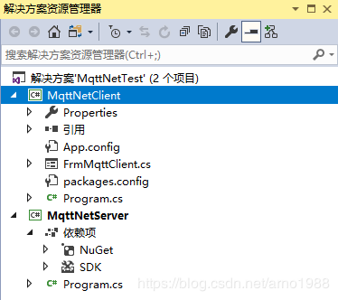
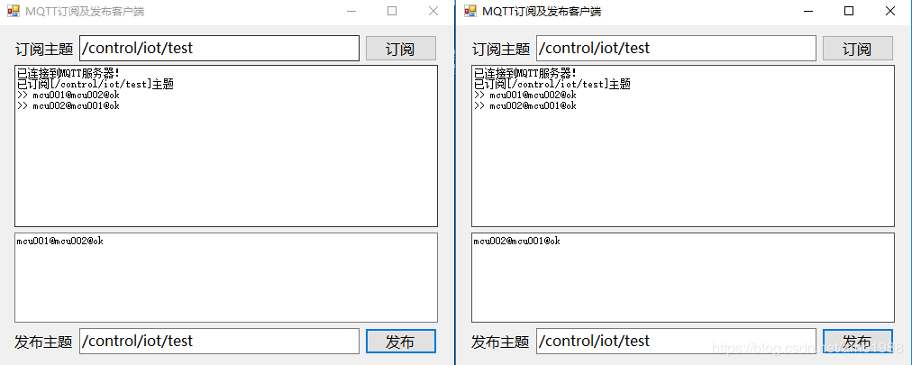
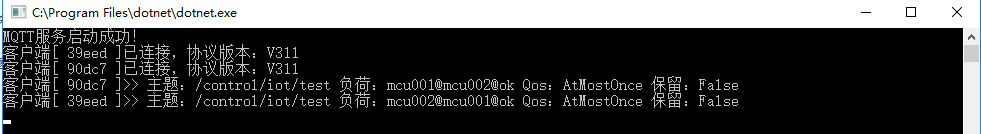

MQTT实战1 - 使用Apache Apollo代理服务器实现mqtt通信
MQTT实战2 - 使用MQTTnet实现mqtt通信
源码下载 -> 提取码 QQ：505645074
MQTTnet 是一个基于 MQTT 通信的高性能 .NET 开源库，它同时支持 MQTT 服务器端和客户端。而且作者也保持更新，目前支持新版的.NET core，这也是选择 MQTTnet 的原因。 MQTTnet 在 Github 并不是下载最多的 .NET 的 MQTT 开源库，其他的还 MqttDotNet、nMQTT、M2MQTT 等代码结构

测试截图

